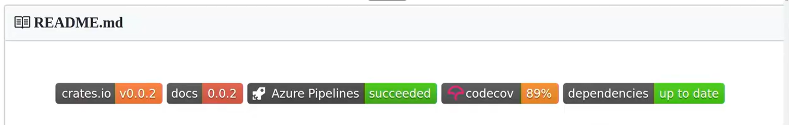

Missing Semester 学习笔记
7. Debugging and Profiling
杂项
- 使用颜色高亮输出，以更方便的获取信息，比如日志中使用不同颜色高亮不同严重程度的信息。
- 在大多数的 UNIX 系统，日志通常放在
/var/log下。 logger(shell 指令) : 可以用来记录日志，例如：logger "Hello"可以将Hello记录在系统日志中。time(shell 指令) : 计算程序运行所花的三种时间。strace(shell 指令) : UNIX 系统上操作分为两种，用户级代码(user level code)，内核级代码(kernel level code) ，该指令可以追踪程序执行了那些系统调用。tac(shell 指令) : (cat反过来写) 读取文件并从下往上输出，在 shell 可以免去翻滚看顶部的苦恼。perf(shell 指令) : 分析程序表现，比如执行了多少个 CPU 时钟等等。
调试
调试方式：
- printf debugging : 在代码中插入输出语句输出需要的信息进行调试。
- logging : 使用日志进行调试。优点：可以定义严重性程度，并进行过滤；
- 调试器调试 : 比较大的错误不如上面两者，效率比较低，但是对于某些错误使用这个方法有奇效，比如比较短的代码发生 Runtime error。
- 静态分析工具：以源代码为输入，输出可能有问题的部分。（有英语的静态分析工具，狂喜）
性能分析
实际时间(real)：代码运行的实际时间
用户时间(user)：执行用户级指令所花的时间。
系统时间(sys)：执行内核指令所花的时间。
例子：
sleep x的实际时间不是 x 秒，会有些误差，很好理解，有别的程序在占用程序资源，导致实际时间大于理论实践，且会浮动。time curl URL(URL是某个网站) 得到 $real=x,user=y,sys=z$ ，则实际本机执行命令时间为 $y+z$ ，而在等待网站响应等其他事情上花了 $x-(y+z)$ 。
分析方式：
- printf profiling : 获取每段代码前后两个时间点，作差输出时间差得到运行时间，得到代码运行的实际时间。
- 分析器：分为跟踪分析和采样分析，跟踪分析：跟着程序一起执行，返回每个部分的时间（因此会影响程序的性能，会得到偏差的数据）。采样分析：执行一段时间终止程序，根据堆栈等信息返回程序现在的位置。
8. Metaprogramming
标题欺诈，实际是将软件开发流程的。
构建系统
为了得到一个文件，有时候会执行一系列的指令，使用某些工具可以自动化这个过程，甚至减少构建过程中的工作量，加快构建之间，比如 : make ，配置 $\text{makefile}$ 文件可以自动化执行指令并生成一些列你需要的文件，其会自动执行指令、寻找执行指令需要的依赖项和避免不必要的工作（比如依赖项没变，就不执行命令生成一个一样的文件）。
依赖关系
版本号
在编写版本号时，一个可行的版本号设计是 x.y.date 其中 $\text{x,y}$ 是版本号，$\text{date}$ 是日期，这样的版本号有个问题，以编写函数库为例子，现在有三种更新：
- 打补丁，补漏洞。
- 添加新的功能。
- 减少功能、重命名功能。
$\text{1}$ 对依赖的影响最小，甚至如果用到的特性与补丁漏洞无关，用低版本没有任何区别，$\text{2}$ 不具有向前兼容性，旧版本无法适应高版本，$\text{3}$ 则不具有向后兼容性，依赖低版本的软件在高版本中使用。因此，如果不在版本号中对这三者加以区分，可能会使使用者十分痛苦，也就是无法根据版本号看出哪些版本可能是兼容的（兼容是十分重要的，如果每个软件都依赖一个库的特定版本，不兼容其他版本，那为了同时运行这些软件就要下很多个版本的同一个库，这显然是痛苦的）。
比如都是小的版本号，$\text{1.0}\to\text{1.1}$ 修改了补丁，而 $\text{1.1}\to\text{1.2}$ 增加了新的特性，可能会让使用软件的人疑惑，为啥依赖 $\text{1.1}$ 的可以依赖于 $\text{1.0}$ ，而依赖 $\text{1.2}$ 的则无法向前兼容。所以使用者很难根据版本号，推断出哪些版本是能够兼容的。
因此一个方法是采用 x.y.z ，$\text{x}$ 表示破坏向后兼容的更新，$\text{y}$ 表示破坏向前兼容的更新，$\text{z}$ 则是补丁，Python 的版本号就遵循类似的规则。
锁定文件
在构建依赖关系的时候，锁定某个文件在某个版本或者某个状态。
好处：
- 加快构建时间，不用每次构建都更新这个文件（构建系统可能会每次更新所需的依赖项）或者更新状态。
- 将软件锁定在某个状态，比如和安全有关的软件，可能因为依赖项更新所产生的安全漏洞，而导致软件的不安全。
坏处：失去更新依赖项新版本的好处，比如新版本修复了一个安全漏洞等等。
持续集成(Continuous Integration/CI)
本质上是云构建系统，将构建系统存储在网上，对项目进行构建，持续集成可以干很多事情，一个经典的操作是将系统设置为条件触发，在触发条件后，执行一系列指令。
网上有很多持续集成的服务，例如 : Github Action，dependabot（一个能在依赖项更新时提醒你更新的工具，也就是说持续集成可能在项目没有发生任何改变的时候也有可能触发，总之触发条件可以各种各样，十分灵活）。
在将持续集成嵌入项目中时，可以设置该持续集成项目提供的徽章来表明你设置了这个服务，下面是视频中的例子。

还有一个例子是我现在就在用的 Github Pages，将用户上传的 Markdown 文件通过 Jekyll 解析为 HTML 文件并且部署在 Github 提供的子域名上形成静态网站。
测试
讲了些术语。
测试套件：程序所有测试的简称。
单元测试：通常是比较小的，自包含的测试，用来测试某项特定的功能
集成测试：测试程序不同子系统间的交互。
回归测试：在发现 BUG 并修复后，将测试该 BUG 的测试加入到测试中防止未来再次发生。
模拟(mocking)：用虚拟的方式替换掉某些部分，起到检测特定功能的目的，比如测试 SSH 进行文件拷贝的工具时，可以将 SSH 的部分改成另外一个模拟函数，正常的输入输出，让其余部分认为这一部分在正常工作，这样就可以专门测试文件拷贝的部分。
Security and Cryptography
熵与密码
这里的熵指信息量，以 bit 为单位，计算公式为：$\log_{2}{p}$ ，其中 $p$ 表示可能性，比如投硬币只有正反两面，所以是 $\log_{2}{2}=1$ 表示 $1\text{bit}$ 的可能性。
而在平时设计密码的时候，根据设计密码的逻辑不同，对应的密码会有一定的熵，熵越高的密码理论上越难暴力破解，因为要尝试更多的可能性。同时给出了些数据，如果网站有一定保护，比如在密码错误若干次后会锁住一段时间之类的机制，则熵在 $40\text{bit}$ 左右就比较强了，但是如果没有，则要升到 $80\text{bit}$ 左右。
同时讲了些比较强的密码生成规则，比如给一个字典，然后每次随机几个单词作为密码，那就有 $\text{单词数量}^{随即次数}$ 种可能，又或者将一句话中比较像数字的字母替换成数字，然后末尾加些标点符号之类的东西。
哈希函数
哈希函数打 OI 的再熟悉不过了，具体来说，是一个将任意输入变成固定长度输出的一个函数，具有以下性质：
- 不可逆性，不能从输出倒退输入。
- 结果确定，同一个输入只会有一个输出。
- 抗碰撞性，很难构造具有同样输出的输入。（一般来说，根据需求，对抗碰撞性的强弱要求会有所不同，比如加密哈希函数的抗碰撞性要求会比较高）
sha1sum(shell指令)：从标准输入流读入并用 SHA1 算法输出加密结果。
用途：
- 生成存储地址，例如 git ，根据内容用哈希函数生成唯一的存储地址，可想而知，这对抗碰撞性的要求很高。
- 验证文件，给文件生成哈希值，在下载时对比确定下载的就是目标文件。
- 承诺方案，在进行类似猜你心中在想哪个数字之类的事情时，可以先把所猜数字的哈希值公布，然后在结束后验证结果，当然，可以采用某些手段来防止暴力试出结果，比如在加密前加入一些显然不会干扰验证的话：5 is the answer. 之类的。
- 验证密码，数据库存储密码的哈希值，防止数据库泄露的时候直接泄露原密码，降低损失。
密钥生成函数(key derivation functions,KDFs)
哈希函数的变种，但有个额外的特性：计算速度较慢。
用途：用来加密密码，来每次验证单个用户不会有明显的速度感觉，但是如果在破解的时候，涉及到大量的加密操作时，就会明显降低破解速度。
对称加密
主要有以下三个函数：
密钥生成函数(key gen)：随机或者按照某个规则生成密钥
加密函数：给出明文和密钥，生成密文。
解密函数：给出密文和密钥，生成明文。
如果怕忘记密钥，可以用口令生成密钥，类似密码那样，但是要考虑强度问题，可能通过暴力尝试口令尝试所有密钥，所以要类似密码那样考虑可能性的问题。
openssl(shell指令)：加密解密内容，可指定算法。
用途：在自己保留密钥的情况下，加密自己的文件防止被查看，比如上传到不信任的公共空间或者云盘上等，或者在私底下交换了密钥后，公开和别人进行加密通信。
一种可能的破解方式：彩虹表，存储大量密文对应的明文，然后查询破解。
应对手段：撒盐，给加密过程加上一些外部的随机因素，例如，外部加入一段随机出来的固定的字符串在文件末尾参与加密，这样原信息就不会因为收录在彩虹表中而导致破解。
非对称加密
密钥生成函数：生成公钥和私钥。
加密函数：给出明文和公钥，生成密文。
解密函数：给出密文和私钥，生成明文。
好处：可以公开公钥，让别人用公钥加密，发送给持有私钥的人，可以用于加密通信。
用处：
- 数字签名，签名者用私钥加密，然后公开公钥，发送密文，别人可用公钥解密验证身份，没有私钥的人无法伪造签名。
- 加密通信，只要互相公开公钥，就可以进行加密通信。
- git也有类似的签名操作，但是我没看懂，相关的操作是
tag。
密钥分发(key distribution)：如何确保别人得到的是我的公钥，而不是别人的公钥。（感觉这个翻译成密钥有点奇怪，感觉应该是公钥）
一些方法：
- 非网络渠道交换，比如线下交换。
- 由第三方平台的安全性保障，比如加密通信平台 Signal 的安全性就是由其服务器安全性保证。
- 社会证明，将公钥和一系列社交平台用户绑定，只要没有一次性大量平台的账号被黑，就能确保公钥的安全性，一个对应的网站叫 keybase.io 。
对应的一个更加宏大的问题是
引导问题：通常指在没有预共享密钥和信任基础的情况下建立安全通信渠道的问题。
混合加密技术
非对称加密比较慢，但是对称加密比较快，有没有综合两者优点的方法，对应的就是混合加密技术。
用密钥对称加密源文件，再用非对称加密加密密钥，然后将加密后的密钥和密文发送过去，就可以综合两者的有点。
威胁模型(Threat Modeling)
课上提到，去搜了一下，大概是说：
在构建安全方案之前，先建立对应的问题模型，为安全设置合适的目标，比如假定现在服务器是安全的，而可能产生问题的是哪些环节，可能的攻击者是哪些，他们可能采取什么手段进行攻击等等。
大杂烩(Potpourri)
介绍了很多概念，以及一些可能会用到的计算机工具（涉及的软件可能需要自行寻找）。
Key mapping
将键盘上的操作映射到一些别的操作，下面是一些具体的例子：
- 将一个键或组合按键映射到另外一个键。
- 将一个键或组合按键映射到一个具体的计算机操作，类似快捷键那样，例如打开一个浏览器窗口或者粘贴某段具体的文本。
- 用键盘序列去映射到某个具体的操作，具体来说就是一连串的按键产生具体操作，例如 tmux 中 C-A 再 C-B 会对应着一个操作。
- 一个按键在不同状态下对应不同的操作，例如将 CapsLock 在短按状态下对应 Esc，长按状态下 Ctrl 。
守护进程(daemons)
在后台运行，在系统启动运行到系统结束，或者在某种条件下运行的进程。
系统中通常有个大的系统守护进程，用来管理系统中的所有守护进程，例如：Linux 中的 systemd 。
systemctl(shell指令)：用来查询现在执行的所有守护进程的状态。
注：系统守护进程通常以 ‘d’ 结尾，例如：sshd, systemd 。
文件系统(file system)
通常执行一个文件操作的时候，用户层面会将操作发送到内核，然后内核先判断对应的文件处在哪个文件系统（现在的文件系统可以模块化使用，也就是可以使用多个文件系统），再根据内置的文件系统去执行相应的操作，一个坏处是，我们无法在中间插入用户操作。
FUSE 文件系统允许用户在文件操作时插入用户操作，所以有一些很酷的操作：
- 在每次创建文件时发送一封邮件。
- 将每次的文件操作都链到远程服务器，这样就相当于将远程服务器作为一个本地的一个文件夹。
- 在文件操作时加密或解密对应的内容，这样在将磁盘取出置于另外一个文件系统时，看到的就是加密文件了。
备份，课上提到了很多很有意思的备份观点。
- 备份时考虑攻击者需要什么样的信息，才能将数据删除，从而采取不同的备份方式，例如：离线存储、云上存储等等。
- 一些远程服务器的数据本地可能没有备份，比如邮件，如果账号丢失，封禁等等，数据就直接丢失了，有一些工具可以储存这些东西。
接口(API)
在使用一些服务的时候，这些服务会提供一些 API ，方便我们与服务交互，获取数据或者执行操作之类的。
一个例子就是：有些网站可以通过访问 URL 的方式，根据 URL 中填写的参数，服务器会响应并返回结果。
curl(shell执行)：访问 URL 并返回结果。
命令行参数
在涉及到需要文件名作为参数的时候，可以用 - 作为标准输入/输出的代称。
在一些指令时，我们希望某些参数不要被识别为选项或者标志，例如我们像删除名叫 -r 的文件，但 rm 会将其视为选项，一个方法是 -- ，会让命令将之后的所有东西都不识别为选项，前面的例子就是：rm -- -r 。
窗口管理器
我们比较常用的是浮动窗口管理器，好处是简单易上手，有一些别的窗口管理器以效率为主。
例如平铺窗口管理器，会将窗口填满整个总空间，类似于 tmux 那样，可以通过快捷键快速在窗口间切换。
虚拟专用网络(VPN)
一个经典的操作是，更改网络服务提供商。
但如果目的是安全性，这未必安全，因为只是将信任主体从网络提供商变成了 VPN 提供商而已，他们可以监视你的流量。
Markdown
一种标识文本的语言，太熟悉了。
Hammerspoon
MacOS的窗口管理工具，可以与操作系统进行交互实现一些很酷的操作，其他操作系统应该有类似的功能。
可以通过 Lua 语言编写脚本，与显示管理、文件系统、电池等各种操作系统管理的东西交互。
例如：
- 执行键盘映射。
- 用快捷键进行窗口布局。
- 在窗口创建一个小菜单，上面提供一些会执行预设好的操作的选项。
- 识别所处 Wi-Fi 环境，如果不是家中则静音防止外放。
Live USB
电脑通常会配有一个 BIOS 系统用来在开机时启动系统，在开机时根据电脑的不同可以按不同的按键进入这个系统，来配置一些系统相关的东西，如果要在电脑上安装系统甚至多系统，应该对这个东西很熟。
而 Live USB 是将操作系统和软件安装在 USB 上的一个工具，电脑在插入 Live USB 后，可以在 BIOS 上选择启动 Live USB 上的操作系统，来对计算机上的文件进行操作，例如计算机安装系统失败了等等，都可以用这种方式来补救。
虚拟机
用软件创造一个孤立的环境运行一个独立的操作系统，在这儿操作系统上隔离的执行一些操作防止影响到主机。
还有一些类似思想的工具，例如 Docker ，在不安装系统的情况下，配备相应环境并运行该系统下的软件，比较轻量级。
笔记本编程环境
这个比较抽象，大概是说可以将编程界面变得更加交互，例如一个叫 Jupyter notebook 的编程软件，可以分段式的运行 Python 代码，逐渐的构建起程序，听老师说在机器学习中会用到？不懂。
github
主要讲了如何给 github 的项目做贡献。
- issue ，也就是反馈 BUG 或者是问题。
- pr(pull request) ，提供具体的代码给管理者。一般流程是将仓库克隆到本地，做出修改，提高 pr ，然后和管理者交流，管理者认同后将提交合并到主仓库。
Q&A
C-o 跳转到上次停留的位置
d/{string} 搜索是个名词
C-i
:eariler
撤销记录